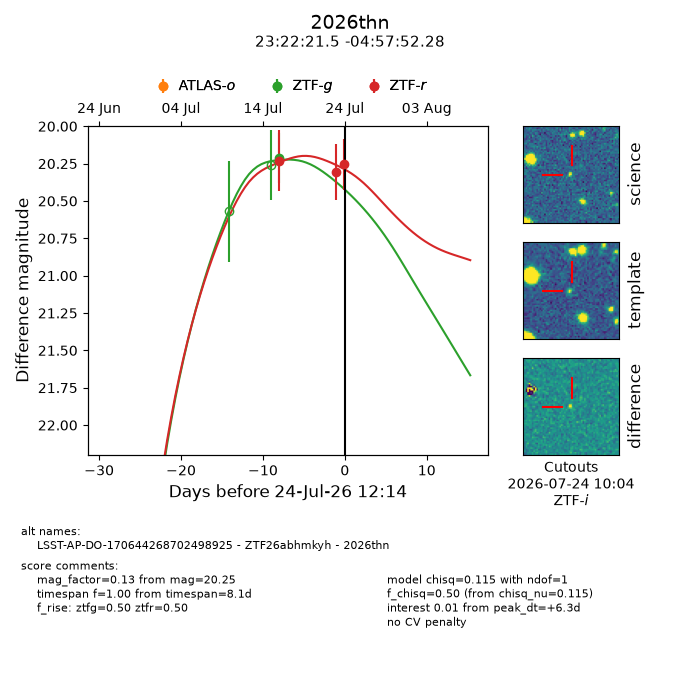
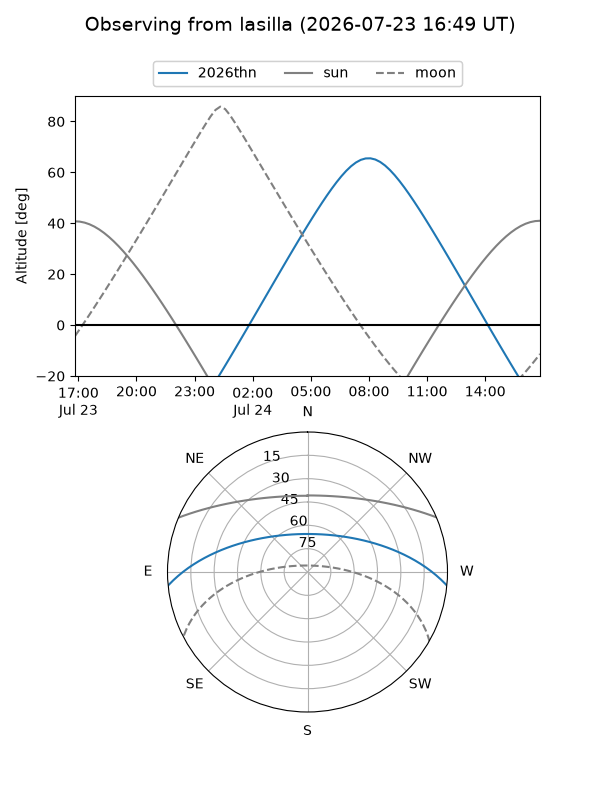
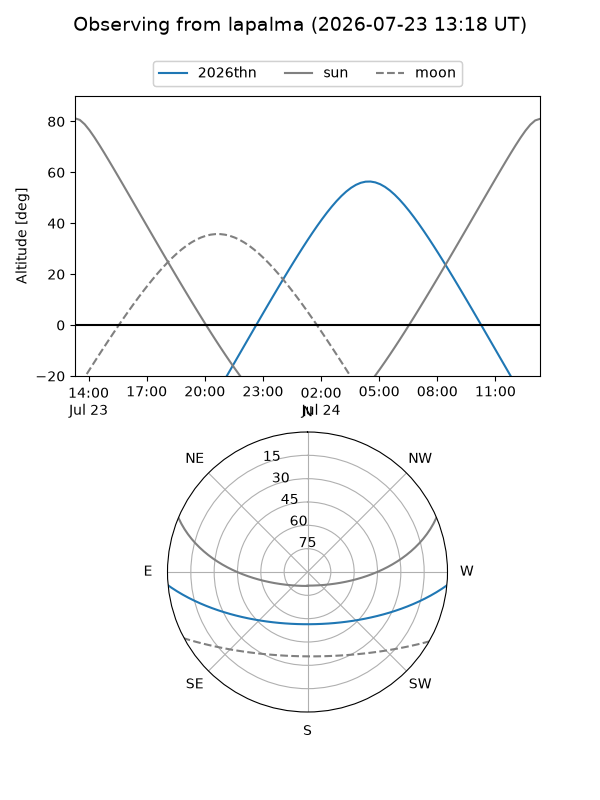
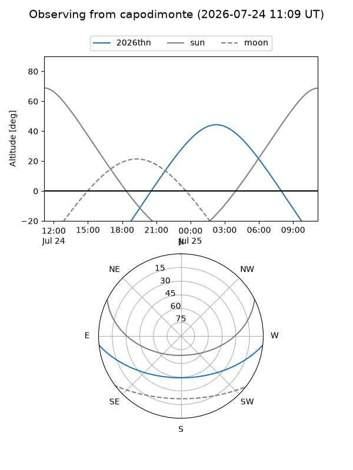
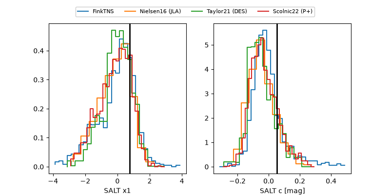

2026thn
Target 2026thn at 2026-07-24 12:16
Aliases and brokers:
FINK-ZTF: ztf.fink-portal.org/ZTF26abhmkyh
Lasair-ZTF: lasair-ztf.lsst.ac.uk/objects/ZTF26abhmkyh
ALeRCE-ZTF: alerce.online/object/ZTF26abhmkyh
YSE-PZ: ziggy.ucolick.org/yse/transient_detail/2026thn
TNS name: wis-tns.org/object/2026thn
Direct TNS query: direct search
alt names
ZTF26abhmkyh (ztf,fink_ztf)
2026thn (tns,yse)
LSST-AP-DO-170644268702498925 (iau_lsst)
Coordinates:
equatorial (ra, dec) = 350.5897,-4.96452
equatorial (HMS+DMS) = 23:22:21.52,-04:57:52.28
galactic (l, b) = (75.2177,-59.31365)
Flags:
TNS type: nan
peak dt: +6.3
Photometry:
last ztfg=20.21, ztfr=20.25
1 ztfg, 3 ztfr detections
Lightcurve

Visibility



Additional plots
